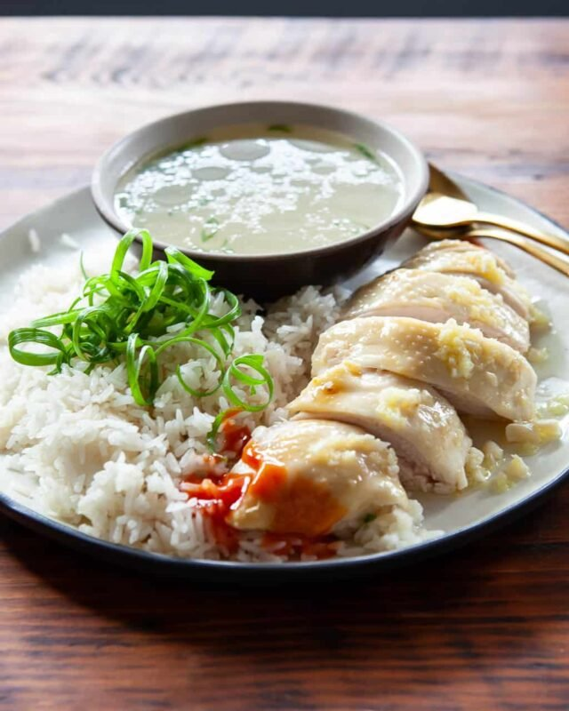

Singaporean Chicken Rice

Description
While your chicken is cooking, it helps to prepare the ingredients for your chilli sauce and rice. Both of these are usually assembled
after the chicken is done because they require the chicken broth, but you can get started washing and soaking the rice, chopping
the garlic and ginger. In this recipe, all of the poaching broth is reserved -- some is used in the rice, a small amount is used in the
chilli sauce, and the remainder is saved to be heated and served as a simple soup to accompany the chicken.
Ingredients
For Chicken
- 1 whole chicken 3.5 lbs, 1.8kg, preferably organic
- 1/4 cup kosher salt for exfoliating (the salt is for cleaning the chicken, this is not consumed)
- 4 inch section of fresh ginger peeled and cut into 1/4'' slices
- 4 cloves garlic
- 2 stalks green onion cut into 1" sections (both green and white parts)
- 1 tablespoon Asian sesame oil
For the Rice
- 2 tablespoons cooking oil like canola, vegetable, peanut
- 2 cloves garlic finely minced
- 1 shallot minced
- 1 inch section of ginger finely minced or grated on microplane grater
- 2 cups long-grain uncooked rice
- 2 cups reserved chicken poaching broth
- 1/2 teaspoon sesame oil
For the Chilli Sauce
- 1 tablespoon lime juice
- 2 tablespoons reserved chicken poaching broth
- 2 teaspoons sugar
- 4 tablespoons sriracha chilli sauce
- 4 cloves garlic
- 1 inch section of ginger peeled
For the Ginger Garlic Sauce
- 4 tablespoons cooking oil canola, vegetable, grapeseed
- 2 tablespoons grated fresh ginger
- 2 cloves garlic finely minced
- 1/2 teaspoon salt
- 1 teaspoon rice or white vinegar
Steps
Cook the Chicken
- Boil a large pot of water. In the meantime, clean the chicken by exfoliating with kosher or coarse salt. Rinse chicken well,
inside and outside.
- PRE-BOIL CHICKEN: When water is at a hard boil, add the chicken. Return to hard boil, let scum come to the surface.
Boil for 5 minutes. Discard all the water, including the scum.
- Refill pot with clean water to cover the chicken by 1-inch, and add in the garlic, green onion and ginger. Bring the pot to
a boil over high heat, then immediately turn the heat to low to keep a simmer. Cook for about 30 minutes more (less if
you're using a smaller chicken). Check for doneness by sticking a chopstick into the flesh under the leg and see if the
juices run clear or insert a thermometer into the thickest part of the thigh not touching bone. It should read 160F. The
chicken will continue to cook to 165F during rest.
- When the chicken is cooked through, turn off the heat and remove the pot from the burner. Immediately lift and transfer
the chicken into a bath of ice water to cool. The quick cooling will stop the cooking process, keeping the meat soft and
tender, and giving the skin a lovely firm texture. After cooling, pat the chicken dry with paper towels and rub the sesame
oil all over the chicken. This will help prevent the chicken from drying out.
Season Soup
- Discard the garlic, ginger and green onion. Season the soup with salt to taste.
Cook the Rice
- Place rice into a large bowl, and fill with water. Use your hands to swish the water around, cleaning the rice. Tilt bowl to discard water, keeping the rice in the bowl Repeat 3 more times, until water is less cloudy.
- In a wok or pot, heat 2 tablespoons of cooking oil over medium-high heat. When hot, add the ginger, shallots and the garlic and fry until your kitchen smells like heaven. Be careful not to burn the aromatics! Add in your drained rice and stir to coat, cook for an additional minute. Add the sesame oil, mix well.
- Add 2 cups of your reserved poaching broth and bring to a boil. Immediately turn the heat down to low, cover the pot and cook for 15 minutes. Remove from heat and let sit (with lid still on) for 5-10 minutes more.
- While the rice is cooking, make the sauces and carve the chicken for serving.
Make Sauces
- To make the chilli sauce: Blend your chilli sauce ingredients in a blender until smooth and bright red.
- To make the ginger garlic sauce: In a small saucepan, heat the cooking oil until very hot, when you start seeing wisps of smoke. Turn off heat. Immediately add garlic and ginger and let it sizzle for a few seconds. Once it settles, stir in salt and vinegar.